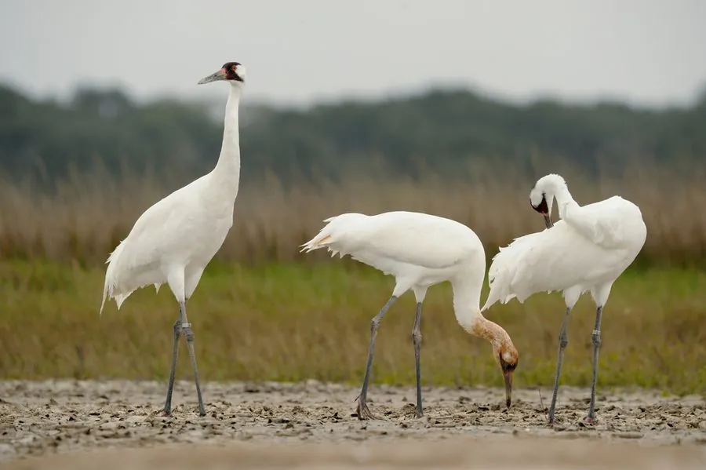

鸟类 · 动物界
美洲鹤 Grus americana

北美洲最濒危的鹤类，全身雪白、脸侧和头顶红色，20 世纪中叶一度仅剩 20 余只，经人工保育艰难恢复。
- 分类
- 门脊索动物门纲鸟纲目鹤形目科鹤科属鹤属
- 栖息环境
- 繁殖于北美北部的沼泽湿地，越冬于美国南部的沿海湿地和农田
- 地理分布
- 加拿大北部和美国北部的湿地繁殖，越冬于美国得克萨斯州和佛罗里达州
- 保护级别
- IUCN 濒危（EN）；非中国分布物种
物种志
美洲鹤体长 130–160 cm，体重 6–7 kg，是北美洲最高的鸟类。它的全身羽毛洁白，飞羽黑色，头顶和脸侧有红色裸露皮肤，喙长而尖，腿黑色。飞行时颈部伸直、双腿后展，黑色的飞羽与白色身体对比鲜明。
美洲鹤繁殖于加拿大北部和美国北部的湿地，越冬于美国南部的得克萨斯州沿海和佛罗里达州。20 世纪中叶，由于栖息地丧失和过度狩猎，野生种群一度仅剩 20 余只。经过人工繁殖、迁地保护和导引迁徙等保育措施，种群逐渐恢复，但仍十分脆弱。它们以植物根茎、螺类、蟹类和小型水生动物为食，每窝产卵 2 枚，孵化 29–31 天。美洲鹤被列为濒危物种，是北美保育史上最著名的案例之一。
形态与习性
- 食性植物根茎、螺类、蟹类和小型水生动物
- 体长130–160 cm
- 体重6–7 kg
- 繁殖每窝 2 枚卵，孵化 29–31 天
- 种群20 世纪中叶野生种群一度不足 30 只
- 寿命野外约 20–25 年
趣味知识
- 美洲鹤是北美洲最高的鸟类，体高可达 1.6 m。
- 20 世纪中叶野生美洲鹤一度仅剩 20 余只，是北美最濒危的鹤类。
- 保育人员曾驾驶超轻型飞机引导美洲鹤迁徙，教它们学习迁徙路线。